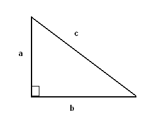
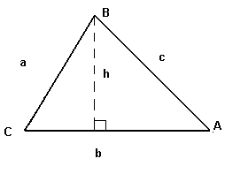
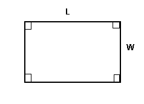
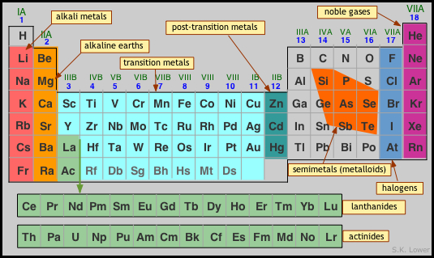

Right Triangle and Pythagora's theorem Pythagora's theorem: The two sides a and b of a right triangle and the hypotenuse c are related by a 2 + b 2 = c 2
Area and Perimeter of Triangle

Perimeter = a + b + c
There are several formulas for the area.
If the base b and the corresponding height h are known, we use the formula
Area = (1 / 2) * b * h
If two sides and the angle between them are known, we use one of the formulas, depending on which side and which angle are known
Area = (1 / 2)* b * c sin A
Area = (1 / 2)* a * c sin B
Area = (1 / 2)* a * b sin C .
If all three sides are known, we may use Heron's formula for the area.
Area = sqrt [ s(s - a)(s - b)(s - c) ] , where s = (a + b + c)/2.
Area and Perimeter of Rectangle
 Perimeter = 2L + 2W
Area = L * W
The idea of the atom
The parallel concepts of the element and the atom constitute the very foundations of chemical science.
An element is an actual physical substance that cannot be broken down into a simpler form capable of an independent existence as observable matter. As such, the concept of the element is a macroscopic one that relates to the world that we can observe with our senses.
The atom is the microscopic realization of this concept; that is, it is the actual physical particle that is unique to each chemical element. Their very small size has long prevented atoms from being observable by direct means, so their existence was not universally accepted until the late 19th Century. The fact that we still hear mention of the "atomic theory of matter" should not imply that there is now any doubt about the existence of atoms; f ew theories in the history of science have been as thoroughly validated and are as well understood.
How are the elements organized?
Two general organizing principles developed in the 19th Century: one was based on the increasing relative weights (atomic weights) of the elements, yielding a list that begins this way:
H He Li Be B C N O F Ne Na Mg Al Si P S Cl ...

Mechanics
Thermal Physics
Waves and Optics
Idea behind this app:
This app is designed with the main focus on helping students with maximum of the formulas, along with their explanations, with examples and best links for online tutorials. Main significance of our app would be a quick revision for the students who are going to appear for the examinations.
Scope, as we see it:
This app will prove to be a one point reference to the students. This will reduce the load of referring books for different subjects, and also the efforts to find solutions on different websites.
Developers: